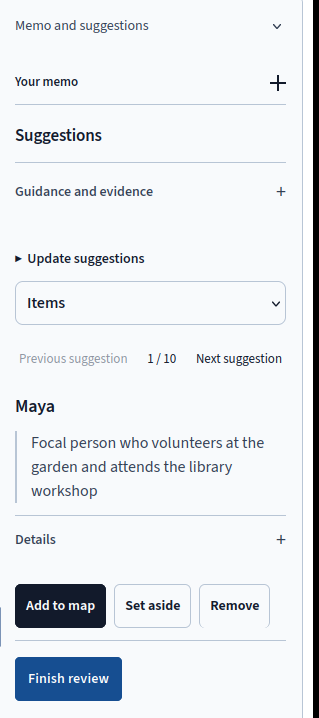

Memo & Suggestions
Compare each model suggestion with your memo before deciding what belongs on the map.
Adding a Memo
Write a one-sentence inquiry that names the focal person or group and what you want to understand. Then paste or upload the memo, which can contain field notes, a case description, an interview, or a reading. The app accepts about 128 KB of text.
Before the first model request, read the transfer disclosure. It identifies what the app sends, including your memo, inquiry, current level, and published course guidance. Each level can use a different memo. The next level's review also receives your earlier Field Notes as your own notes, separate from the memo.
Reviewing Suggestions

The Notebook presents one suggestion at a time and shows your position in a counter such as 1 / 10. Use the selector to move between Items and Connections. Open Details to read the source passage and the model's reasoning. When a suggestion lacks a passage, examine it as an inference and check whether the memo supports it.
Choose Add to map to keep a suggestion, Set aside to retain it for later, or Remove to reject it. Press Finish review after every suggestion has a decision. Undecided suggestions keep the stage open. If you revise the inquiry or memo, Update suggestions requests another model pass.
Project → Preferences includes Automatic suggestion addition. When you turn it on, the app adds suggestions that pass its structural checks immediately, and you remove any that do not belong. The setting starts off, so the usual review asks you to decide before an item enters the map.
What the Model Sends Back
A first pass requests at most six items and four connections, subject to the current level's rules. Meso and Macro return items whose scopes identify the earlier elements they connect. Each item includes a label and a short reason, with a source passage where the model supplies one.
The app checks whether the response follows the level's structure. It reports invalid output as an error and leaves it unpatched. The app preserves the model's labels and shows the response without silently relabeling or filtering it.
Each explicit review action starts one model attempt with a 90-second budget. Only a known availability refusal from the Gateway triggers an automatic fallback attempt. A timeout or invalid response stops the request and shows an explanation. Reloading recovers an existing result for the same request without starting another model attempt.
Guidance and Evidence
The Guidance and evidence disclosure shows the instructor's published guidance and course materials for the current Part and stage. Requests include those materials. For example, an instructor can supply the course's definition of a Micro setting so the model receives the same terms students use in class.
Working Without the Model
You can complete every stage by hand. Use Map tools → Add item to create an item, then select two items to create a relationship. Students who read and code the memo themselves, including those in courses that disable model requests, follow the same five stages.